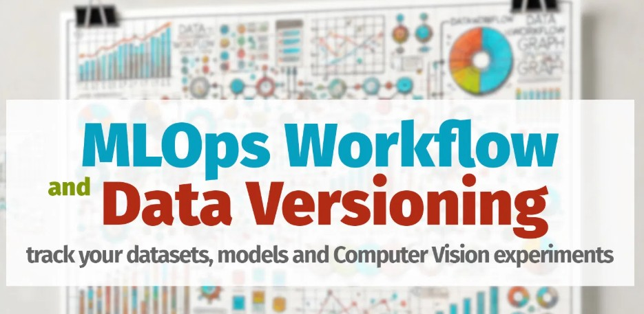
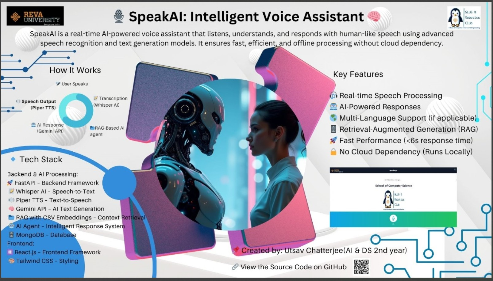

Python • Machine Learning • NLP • Big Data • MLOps
I am an Artificial Intelligence and Data Science student at REVA University with experience building machine learning systems, automation pipelines, and data-driven applications using Python. My work focuses on developing practical AI solutions that analyse complex data, automate workflows, and support intelligent decision-making. Before transitioning into AI and software development, I spent over five years in engineering production environments at Centum Electronics, where I improved testing workflows and optimised process efficiency. This experience shaped my approach to problem-solving—combining engineering thinking with data-driven analysis. I am particularly interested in AI systems, machine learning applications, and scalable data solutions that help organisations solve real-world problems and build intelligent products.
Key Interests: AI Systems • Machine Learning • NLP • Data Engineering • Intelligent Automation
Bangalore, India | 2017–2022

Production-style ML workflow with automated retraining using GitHub Actions.
Big Data analysis on 160+ years of climate data; research paper in progress.
Interactive Power BI dashboard with slicers, KPIs, and multi-page insights.

Cross-platform pronunciation evaluator using ASR and ML scoring.
BTech in Artificial Intelligence & Data Science – REVA University (2023–Present)
Diploma in Electrical Engineering – South Calcutta Polytechnic (2014–2017)
Email: utsavchatterrjee741@gmail.com
GitHub: github.com/Drylegend